3 Loading and Visualizing Data
3.1 Importing Data Already in GIS Formats
There are a few different workflows that can be used to bring data into QGIS. Thankfully, for data already in GIS formats (e.g., shapefiles, geopackages, filegeodatabases, geotiffs), the steps can be as simple as drag and drop the file from your file explorer (e.g., Windows Explorer on Windows) into the QGIS Window. This generally involves having your file explorer open in the foreground over QGIS, and then clicking and holding on the desired file, and dragging it into the QGIS window, and releasing the click.
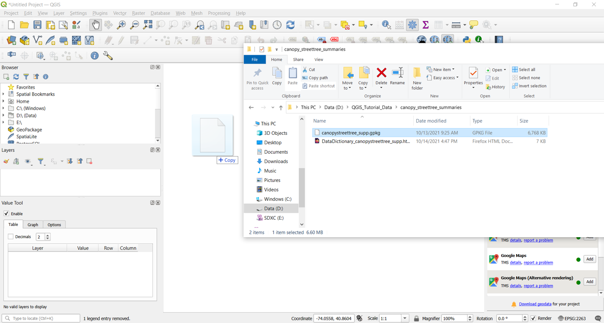
Try this with the Tree Canopy and Street Tree Summary Data, canopystreettree_supp.gpkg - just load the layer named canopystreettree_supp_communitydist for now
Similarly, users can navigate to location of desired files in the Browser panel and drag the files into the Layers panel or the main panels toward the middle of the QGIS window.
*** Note - when you first load a vector dataset, the symbology will typically be the same for the entire layer and the color of the symbols will be randomly generated.***
Some data formats, such as geopackage (.gpkg) and Esri file geodatabases (.gdb) can contain multiple datasets (spatial and non-spatial). When you go to load such data, where multiple datasets or layers are included through one of these drag and drop approaches, you will be prompted to select which data layers you want to include. The default is they are all included. Additionally, by expanding the Options at the bottom, you can choose to import the selected layers directly into a group, such that they are nested together in the Layers panel.
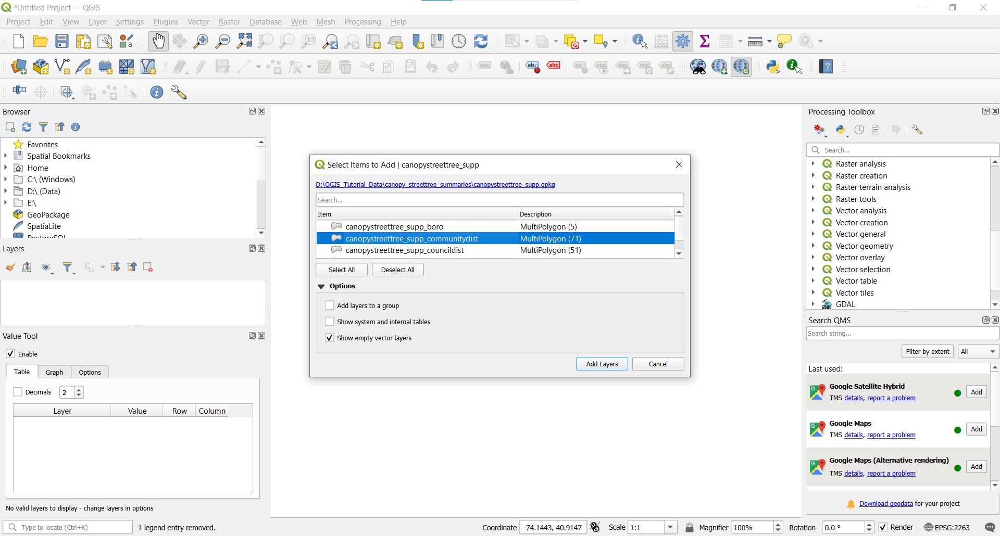
Any tables of data in spatial formats without actual spatial data (e.g., non-spatial tables in a geopackage or file geodatabase) will simply appear as a table in QGIS. The same is the case for any data in non-spatial formats (e.g., text- or tab-delimited files).
3.2 Importing Data in Delimited Text (e.g., CSV) Files
In many cases data are found in non-GIS data formats, such as .csv files, which can be read into spreadsheet software such as Excel. Spatial data in these files may be in the form of columns representing x and y coordinates (for points) or in a single column with the information stored in a “WKT” or “Well-Known Text” format, which follows a specific convention for spatial information (this can include data for (multi) points, lines, and polygons data).
The process for importing these datasets is inherently not as simple as drag-and-drop, due to the fact that these files do not contain all of the information GIS software would need to display them correctly - some of it must be provided (or confirmed) by the user.
As an example, the data associated with this tutorial include a CSV file with centroids of green roofs in NYC. One workflow for bringing this dataset into QGIS is as follows:
- Open the Data Source Manager (
 - generally near the upper left in the toolbar; it is also available through CTRL+L on Windows and the
- generally near the upper left in the toolbar; it is also available through CTRL+L on Windows and the Layersmenu) - Select the Delimited Text option on the left, use the “…” to the right of the File name box box at the top to navigate to the file.
- In this case, QGIS should automatically identify that it is a CSV file, and that the data are point coordinates, with the x- and y-fields being stored in the data in columns xcoord and ycoord, respectively. Users should always confirm QGIS is identifying such information correct.
- QGIS does not know what the CRS, or Coordinate Reference System is for these data, so the “Geometry CRS” entry says may either make an assumption, that it is in the same CRS as other data brought into QGIS already, or it will indicate “invalid projection” and this needs to be specified by the user. 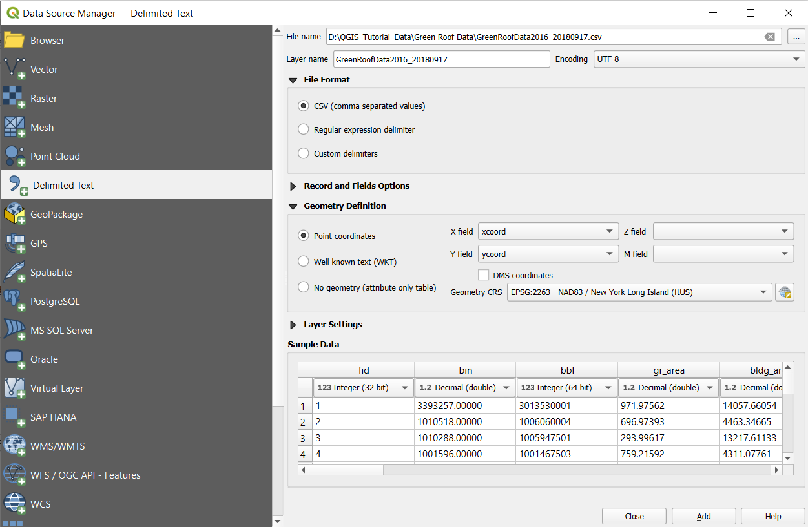
- In either case for this dataset, you will need to indicate to QGIS the correct CRS. The previous dataset we have brought in by this point was in the New York State Plane Long Island Zone, North American Datum of 1983, EPSG 2263, in US Feet. However, this dataset has the coordinates in Latitude/Longitude, in the WGS 84 Datum, EPSG 4326. Click on the icon to the right of this box about Coordinate Systems

- In either case for this dataset, you will need to indicate to QGIS the correct CRS. The previous dataset we have brought in by this point was in the New York State Plane Long Island Zone, North American Datum of 1983, EPSG 2263, in US Feet. However, this dataset has the coordinates in Latitude/Longitude, in the WGS 84 Datum, EPSG 4326. Click on the icon to the right of this box about Coordinate Systems
- Then in the window that appears, use the text filter to search for ‘4326’ - which is a shorthand reference, an “EPSG” code to the appropriate Coordinate Reference System these coordinates are in - (More about Coordinate Reference Systems in the next chapter, Coordinate Reference Systems.) Expand the content in the next box, to reflect what you see in the screenshot below, and hit the Okay button. 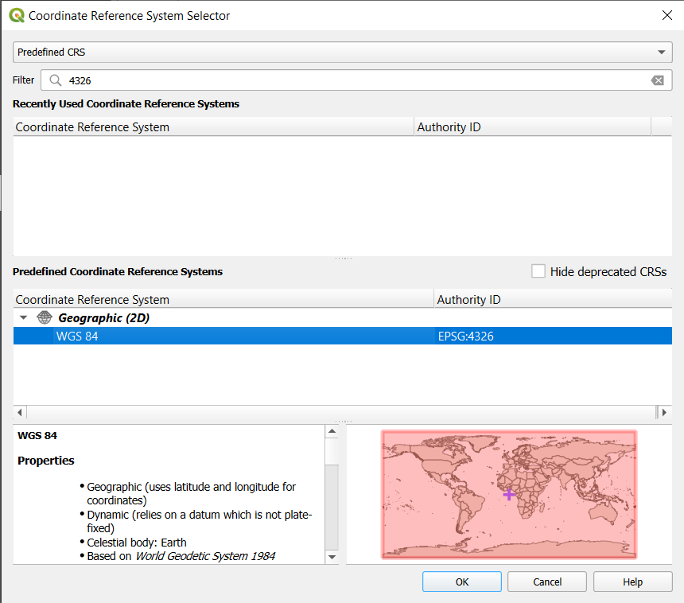
- In the Data Source Manager, you should now be able to click the “Add” button (which would have been grayed out until the CRS is defined).
- Before the dataset appears in the Layers panel, and the points appear in the main window of QGIS, you may see a window pop up asking you to select the desired operations to convert between coordinate systems. You can simply go with the default option and click “OK.”
- The data layer, layered on top of the other dataset we have brought in at this point should now appear something like the below (you’ll need to close out the Data Source Manager window). 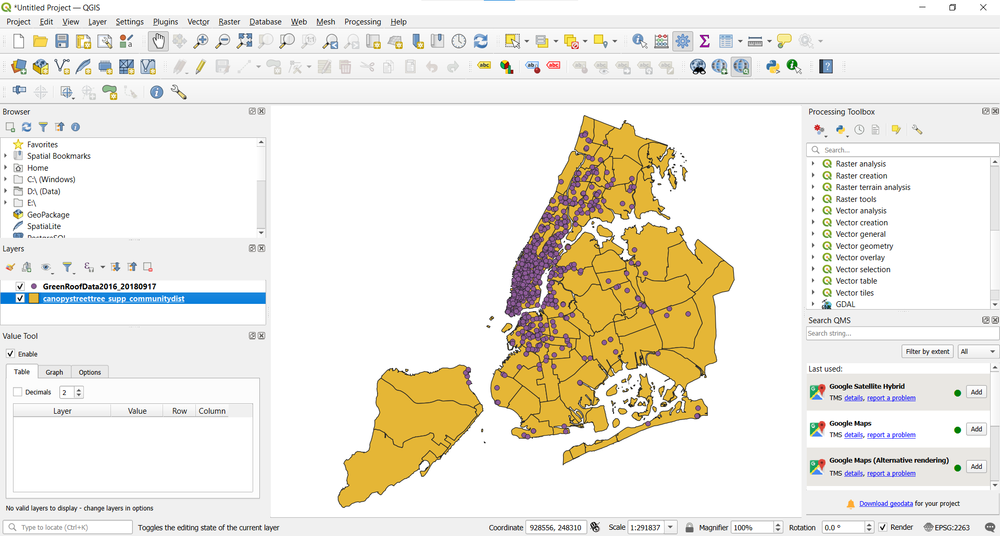
** At this point, load in each of the other data layers (except for other layers available with the Tree Canopy and Street Tree Summary data - for that, the Community District layer is the only one you’ll need). For the remaining datasets you can drag and drop from your file explorer or by navigating to them in the Browser panel; if the data are in .zip folders, you can use those. The NYC Heat Vulnerability Index data is a tabular data, and will not show anything in the main QGIS window, but we will use it later on.*
3.2.1 Ordering and Grouping Layers
As the data layers were loaded, they generally should be listed in the Layers panel, in the order in which they were loaded (last layer at the bottom). This also reflects the ordering in the main map area, or the canvas - with the layers higher in the list being “on top” visually (i.e., the dataset of green roof points should be visible on top of everything else and you may not see some layers that are hidden behind or below others).
To change which layers are visible, you can use the check-boxes, to make them appear or disappear in the map canvas, and you can re-order in the Layers panel by clicking and holding on the desired layer, and moving it up or down with respect to the other layers.
Sometimes it is helpful to “group” layers - which has them nested under a title within the Layers panel, and then they, as a group, appear above or below the other layers based on the ordering within the panel. There will also be a check-box next to the group label, which you can use to turn on or off those layers together. To group/ungroup, select the desired layers by using CTRL + Click on each layer (or SHIFT + Click on the first and last layer if all consecutively ordered), right click, and select “Group Selected.”
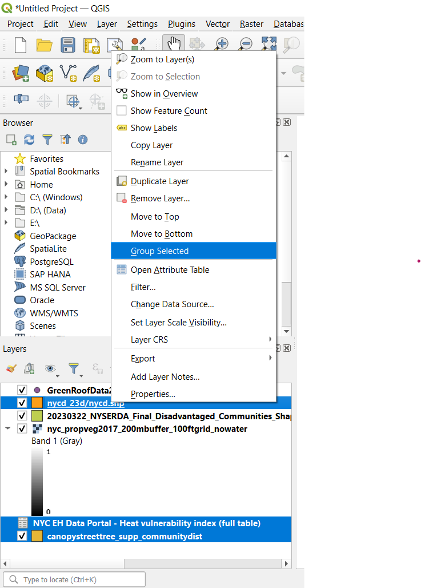
You can then move layers into and out of the group by clicking/dragging them around. You can also create a new group using the respective icon at the top of the Layers panel  and then drag layers in and out as desired.
and then drag layers in and out as desired.
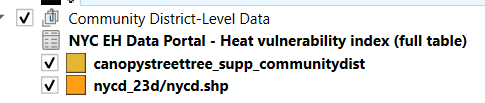
Upon creating a group, you can rename it by right clicking on it and selecting “Rename Group.” Similarly, you can rename layers for use in the QGIS project by right clicking on them and selecting “Rename Layer.”
3.2.2 Saving a Project
At this point, we’ve done a few different steps, and as with so much work, would not want to have to redo things we’ve already done if anything happens - the computer or software crashes. To do this the first time, you can click the  on the toolbar, navigate to the desired folder where you want to save the project, set a name, and click “Save.”
on the toolbar, navigate to the desired folder where you want to save the project, set a name, and click “Save.”
The default format is a .qgz file, which is suitable for most use cases. If you are working on a shared drive with others, you may opt to use the .qgs format, which at least in my experience, works better if multiple people may be opening the project from different user accounts (e.g., on a server).
As you work, you can click the or use CTRL + S on the keyboard to save as you go.
You can also save an existing project into a new file by using the Project menu and selecting “Save As” or using CTRL + SHIFT + S on the keyboard.
3.3 Viewing Attribute Information for Layers
3.3.1 Attribute Tables
Data tables associated with vector datasets, and non-spatial tabular data can be viewed in QGIS by right-clicking on the layer and selecting “Open Attribute Table.” For large datasets, it will take some time to render, but generally for all of the datasets in this tutorial the attribute tables should appear fairly quickly. In some cases you may only want the attribute table to show a subset of the data, such as those visible in the map canvas, and you can set this using the dropdown menu at the bottom-left of the attribute table.
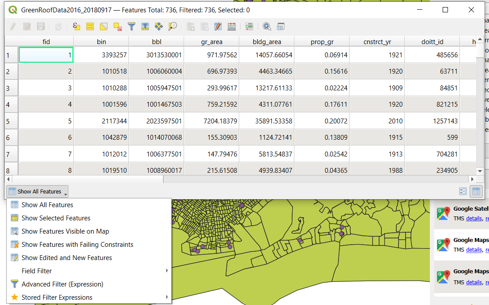
3.3.2 Identify Features
To find out the attribute information for a given piece of a given dataset, you can use the Identify Features tool from the toolbar  . Once selected, you can either click on anything you see within a layer that is selected (e.g., appears in gray) in the Layers panel, or you can right-click in the map canvas and select the layer you want the information from. Once you select the item the Identify Results panel will appear with the respective information as shown below.
. Once selected, you can either click on anything you see within a layer that is selected (e.g., appears in gray) in the Layers panel, or you can right-click in the map canvas and select the layer you want the information from. Once you select the item the Identify Results panel will appear with the respective information as shown below.
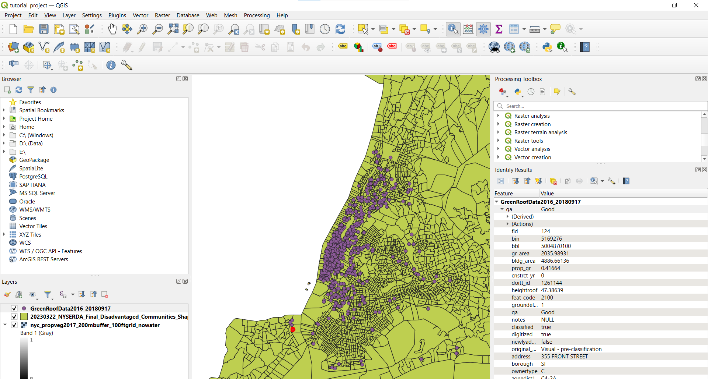
If you are zoomed out enough such that you select multiple features, you will be able to scroll down in the Identify Features panel and see the different entries available. You can also adjust some options for the Identify Features tool via the icons at the top of the panel.
3.3.3 Value Tool (for Raster Data)
While the Identify Features tool works for raster data, as well as vector data, the Value Tool plugin can make for somewhat easier inspection of raster data. With the Value Tool panel active (click the  ), as you move your mouse across the canvas, it will show the values for the pixels from a raster dataset (you may need to resize the columns to see the values). The image below shows an example with the raster data from this tutorial, with the “Decimals” box checked to only show two decimal places of information in the Value column.
), as you move your mouse across the canvas, it will show the values for the pixels from a raster dataset (you may need to resize the columns to see the values). The image below shows an example with the raster data from this tutorial, with the “Decimals” box checked to only show two decimal places of information in the Value column.
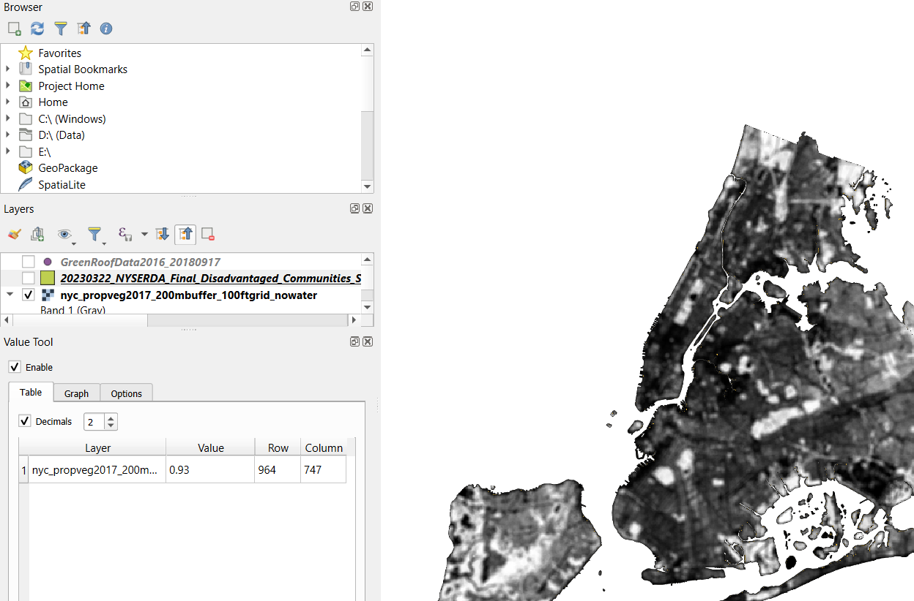
As you mouse over the raster you will see the values change.
3.4 Basic Styling
As you look at data with different kinds of information, you likely want to style it to your liking - either for making maps, or just getting some specific insights. To get to the style settings, you can either open the Layer Styling panel and select the desired layer in the Layers panel, or you can right click/double clock on any layer in the Layers panel, select “Properties” get to the Properties window and click on the relevant tabs on the left to get to styling menus for things like Symbology Labels. Users may find one or the other approach works better for them. Due to the different nature of vector and raster datasets, the styling menus are a bit different across these two
3.4.1 Vector Styling
For vector data, the symbology options generally look along the lines of the below (for the Green Roof Centroids dataset).
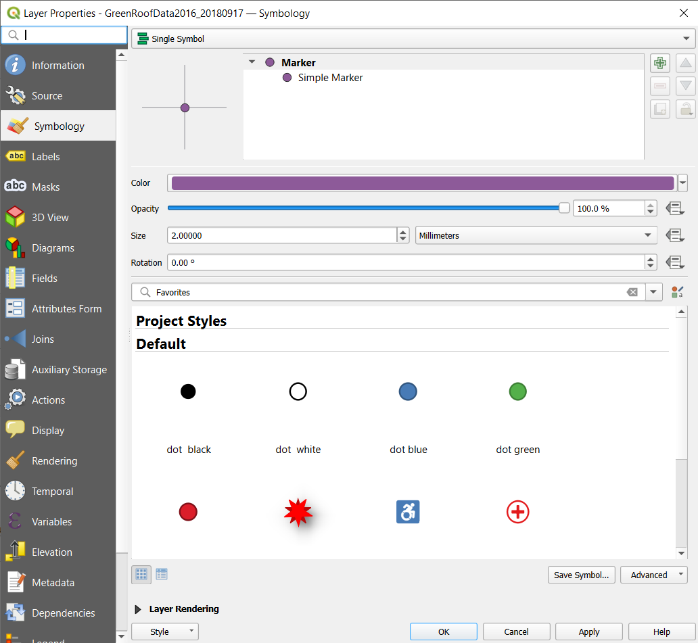
Users can do a variety of things here such as:
- Click in the colored box or use the dropdown icon to the right of it to select a different color, adjust some different parameters (e.g., size and opacity);
- Select a different initial symbol type from the set towards the bottom of the window;
- Use the dropdown next to the word “Favorites” to access some different sets of symbol options or select the “All Symbols” option;
- In the upper area, click on “Simple Marker” and adjust the various options that become visible;
- Click the
 towards the top to add multiple symbology types (e.g., for point data a second symbol could be added to be a bigger circle around the point);
towards the top to add multiple symbology types (e.g., for point data a second symbol could be added to be a bigger circle around the point); - Use the dropdown menu from the top for options to color different features in a relatively automated way.
There is A LOT to explore in terms of symbology. The Categorized or Graduated symbology options from the dropdown menu at the top is one of the most useful features in my work. As an example, with the Green Roof Centroids dataset, if I choose the “Graduated” symbology option, I can than select for the “Value” field any numeric variable; for this tutorial I’ll chose gr_area representing the area of the green roof surface in square feet. Leaving Symbol type as-is, I select a color ramp of Greens (light to dark greens), then leave the “Mode” for the styling as “Equal Count” (which results in about the same number of data points with each color along the gradient) and hit “Classify.”
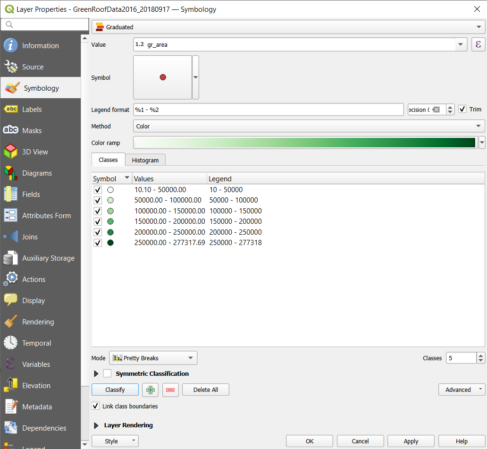
After adjusting the settings, clicking “OK” will apply the styling choices and close the window; clicking “Apply” will apply the styling choices but leave the window open for further adjustments.
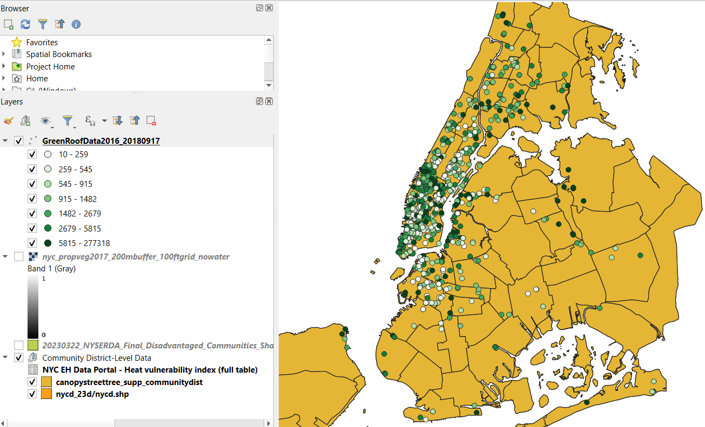
One thing that is sometimes useful is having the border of symbols be the same color as the symbols themselves, and while one could go symbol by symbol along a set of specific styles, some built-in functionality makes this pretty easy in QGIS:
- In the main Layer Properties - Symbology menu, select the Simple Marker (for a Single Symbol styles) or click on the default symbol for a Graduated, Categorized, or similar style and then to the Simple Marker
- Click on the dropdown menu to the right of the “Stroke Color” then click “Edit” 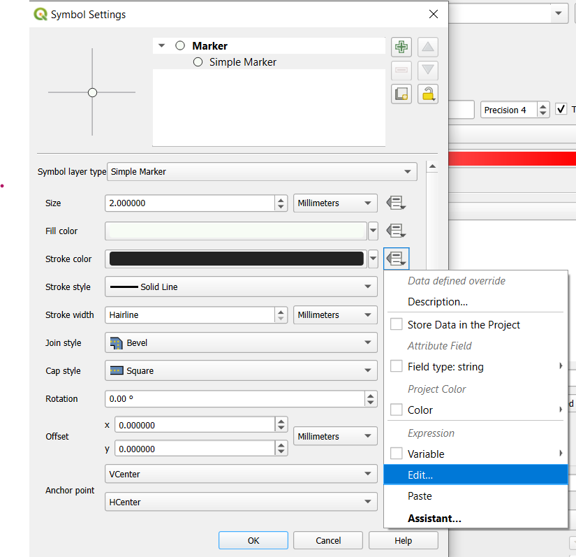
- In in the box on the left type
@symbol_color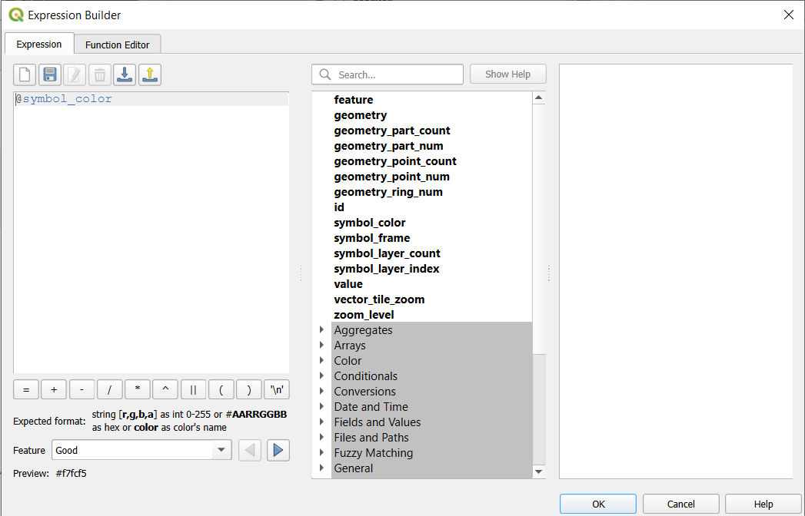 - click “OK” to apply and close the settings until you are back to the styles and then the map canvas, and you will see that what was a black ring around the points is now a ring the same color as the points themselves. 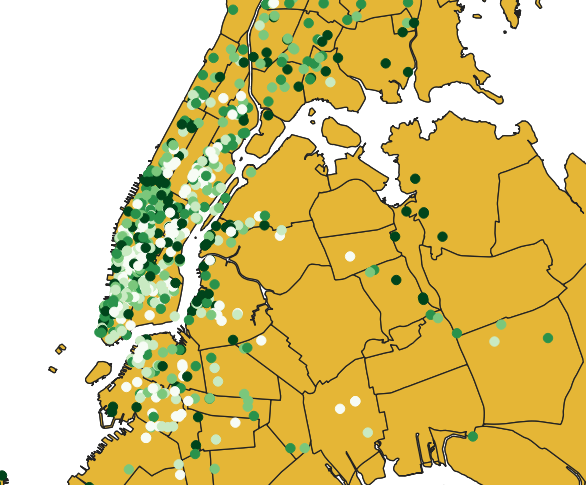
While the above examples are for styling points, similar approaches can be applied to lines and polygons as well.
*** Tips:
- Need to apply the same style to multiple similar layers with the same field name and similar value ranges? You can right click on a layer, navigate to
Styles->Copy Style->All Style Categoriesand then right click on another layer, navigate toStyles->Paste Style->All Style Categoriesto save some work.
3.4.2 Raster Styling
Due to the nature of raster data compared to vector data, adjusting the symbology is a bit different. In general, raster layers will default to having a grayscale symbology applied, with darker shades for the lower values and lighter for higher values, as you may have noticed for the Vegetation Density dataset. In general, we may want to adjust adjust the styling in various ways - the main thing to adjust is the Render Type - you’ll the following options:
- Multiband color - Generally for an image (a type of raster dataset), where, for example, there are different layers that represent red, green, and blue parts of the visible spectrum, and these layers can be merged visually to be what people might generally see (e.g., from an aerial image or satellite image).
- Paletted/Unique Values - Typically for a categorical dataset, such as land cover data, where each pixel value represents a different type.
- Singleband gray - The default for most raster datasets loaded in, where there is a single layer with values that can be represented along a continuous gradient (these can be integer or decimal, spanning positive and negative numbers).
- Singleband pseudocolor - An option to apply various color gradients (including user-defined ones) to a singleband dataset such as described in the previous option.
- Hillshade - Generally used to style elevation data in an aesthetically pleasing way that helps visualize the topography of the landscape.
- Contours - Can be used to draw “contour lines” as are often applied on topographic maps, to delineate specific breaks along the landscape. While this is often used with elevation data, it can be used with other continuous variables, such as on air quality, soil moisture, etc.
In this example with the Vegetation Density raster, we will chose the Singleband pseudocolor option. If you expand the “Min / Max Value Settings” portion of the menu, you can see a number of options - the defaults are generally okay, but you can try adjusting these as desired. If working with a dataset that has a known range and the values for the color ramp do not meet the whole range, you may want to either set “User defined” values or change the “Accuracy” option from “Estimate (faster)” to “Actual (slower).” As with before, I’m adjusting the color ramp to be Greens, and then hitting “OK.”
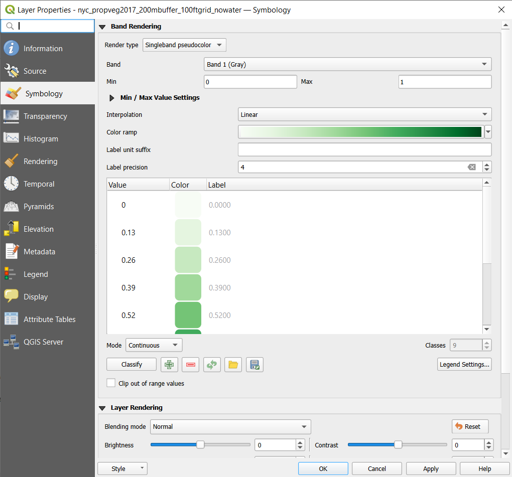
The result should look along the lines of the following:
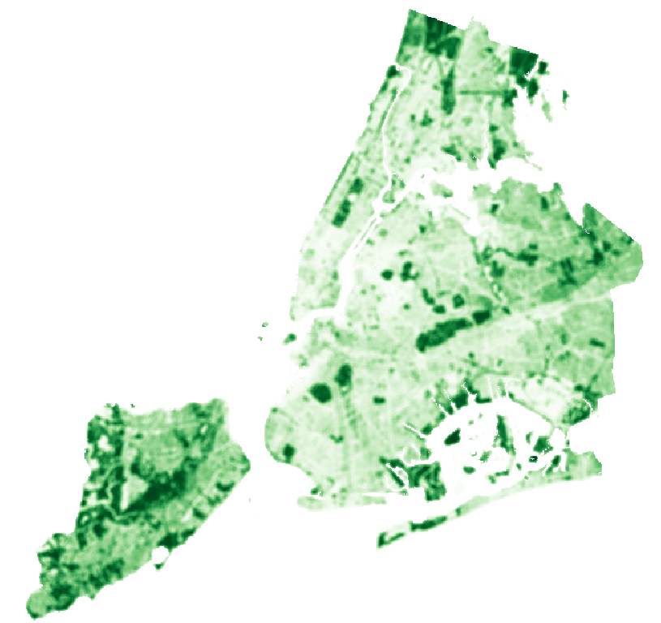
Users can save and load style for layers, both for vector and raster datasets. Included in the folder with the Vegetation Density data is a .qml file that contains styling information used for the main map in the blog post about that dataset from the NYC Environmental Justice Alliance and the The Nature Conservancy’s NY Cities Program as part of the Just Nature NYC partnership. From the Layer Properties - Symbology menu, users can go to the “Style” button near the bottom, select “Load Style” and set the File to use as vegmapping_style_qgis_tutorial.qml and click “Load Style.”
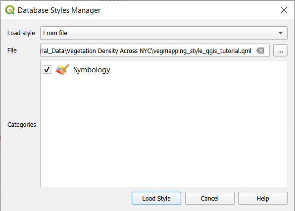
From there, simply clicking “Apply” or “OK” should yield a map that looks like the below, where the transition from yellow to green happens at the 0.32 mark, which is the proportion of land area within a 200 meter radius area that needs to be covered by vegetation to start reducing air temperatures, based on research led by the NYC Department of Health and Mental Hygiene.
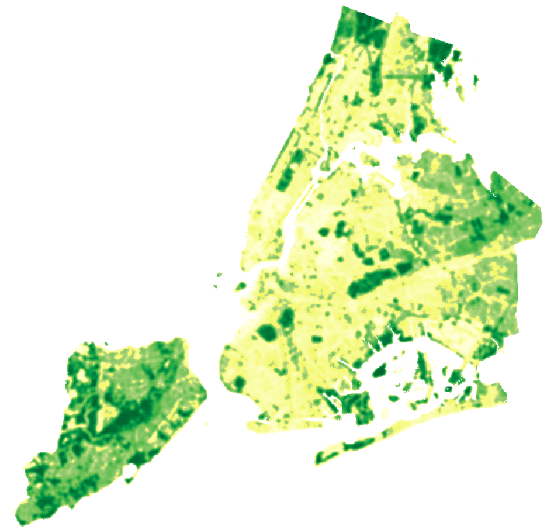
3.4.3 Basemaps
In QGIS there are a few different ways to bring in basemaps. Users familiar with different web services (e.g., WMS/WMTS, ArcGIS REST services, etc.) can specify those through the Data Source Manager or the Browser panel, but more simply, for many use cases, users can use the QuickMapServices plugin. If it is not already up, you can click the  on the toolbar. From there, in the SearchQMS panel, users can search for various basemaps, such as from Google. Note, these are not necessarily licensed openly for broad reuse, but for visualizing datasets together, this can still be useful! Additionally, if you search for “nyc.gov” you can find basemaps, labels, and imagery specific to NYC from the City of New York, and acceptable for use in various ways under a Creative Commons license - see the associated website. To load a given basemap into QGIS, users can double-click an entry, or click the “Add” button; the layers get added to the bottom of the list of layers in the Layers panel.
on the toolbar. From there, in the SearchQMS panel, users can search for various basemaps, such as from Google. Note, these are not necessarily licensed openly for broad reuse, but for visualizing datasets together, this can still be useful! Additionally, if you search for “nyc.gov” you can find basemaps, labels, and imagery specific to NYC from the City of New York, and acceptable for use in various ways under a Creative Commons license - see the associated website. To load a given basemap into QGIS, users can double-click an entry, or click the “Add” button; the layers get added to the bottom of the list of layers in the Layers panel.
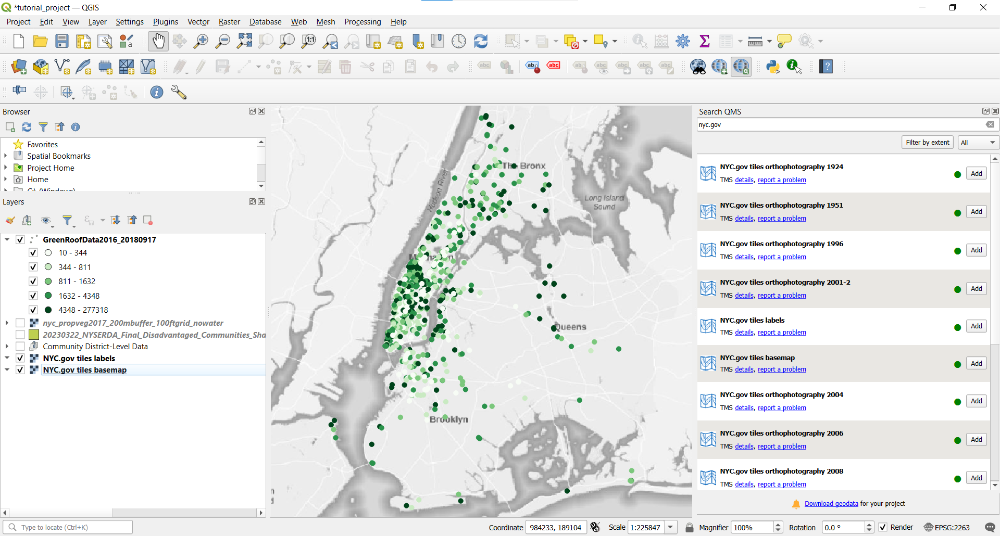